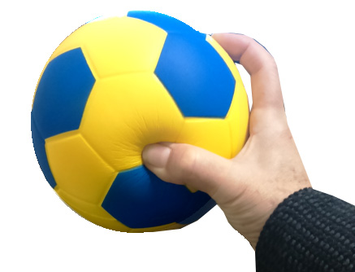

Con espuma rebota menos
Las pelotas de esparcimiento se construyen de la misma manera que los balones profesionales, pero estan hechos de materiales mas baratos. El cuero sintetico que es duradero, pero de menor calidad, se utiliza tipicamente para la cubierta exterior.
Los paneles estan pegados, moldeados o cosidos a maquina, en vez de cosidos a mano. Esta cubierta exterior y su construccion esta destinada a soportar las superficies abrasivas o irregulares, tales como el asfalto.

La cubierta de una pelota de futbol bajo techo esta hecha de fieltro o un material similar, en lugar de cuero sintetico. Por su parte, los balones de futbol de sala se utilizan sobre superficies duras. A diferencia de otras pelotas, la camara de una pelota de futbol de sala se llena de espuma.
Una pelota de interior o para el aire libre puede ser incontrolable en una superficie dura y lisa donde se juega el futbol de sala. Al llenar la camara con la espuma, la bola es mas pesada y rebota menos.